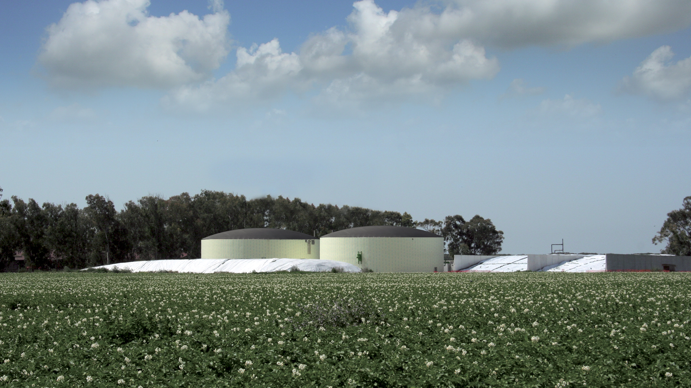
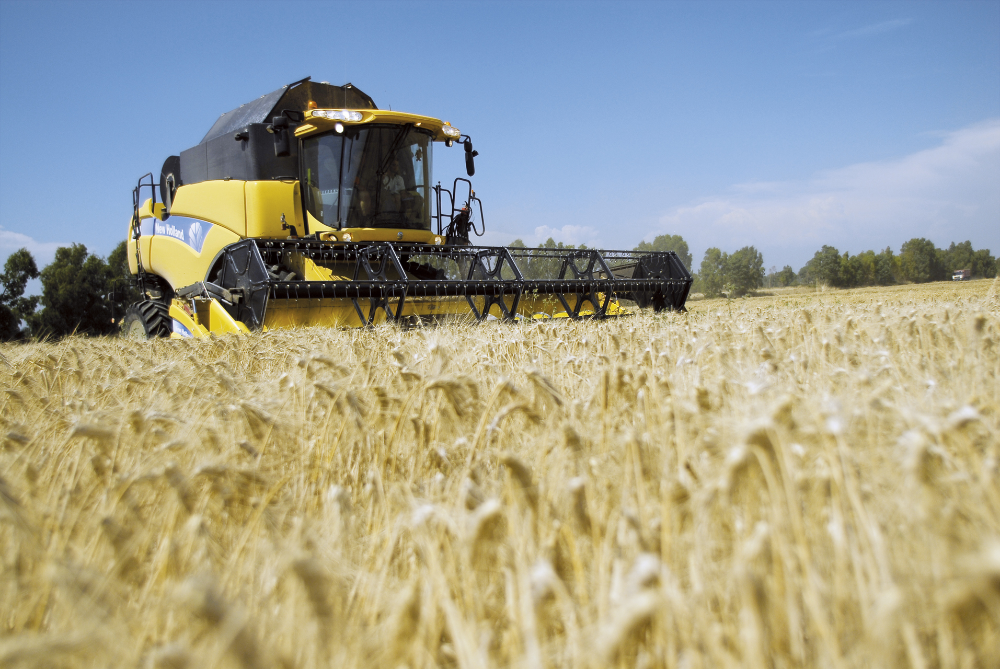
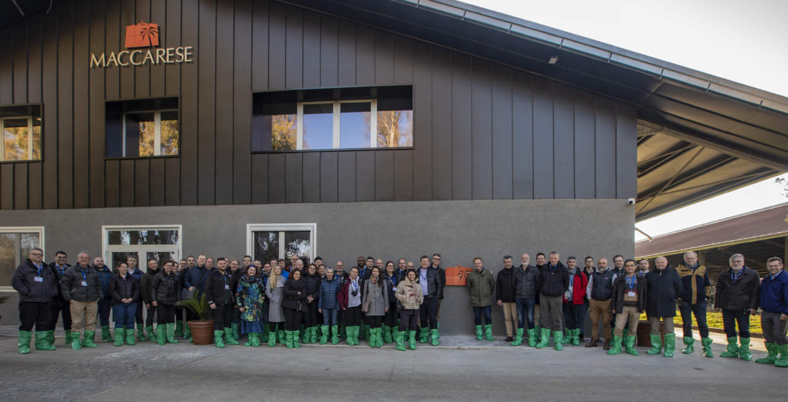
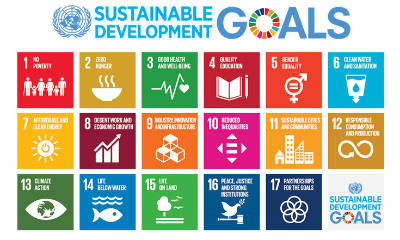

L’azienda agricola Maccarese S.p.A viene considerata tra le più grandi aziende agricole italiane e anche come una delle più grandi realtà imprenditoriali d’Italia. Situata nel comune di Fiumicino e acquisita nel 1998 dal Gruppo Benetton, oggi la Maccarese spa fattura 15 milioni di euro anno divisi tra settore agricolo, zootecnico e energetico.
La superfice agricola è di 3200 ettari e consente la coltivazione di cereali, proteaginose, foraggi e ortaggi. Oltre all’attività agricola è presente uno dei maggiori allevamenti, a livello nazionale, di vitelli maschi e di vacche di latte e il centro zootecnico si estende per circa 17 ettari avvalendosi dei più avanzati software per monitorare la qualità del latte, l’efficienza della mungitura, la riproduzione e il controllo analitico dei consumi alimentari con la finalità di garantire la sicurezza alimentare e il benessere animale.
A completare il ciclo di un agricoltura sostenibile nel 2010 sono stati realizzati 2 impianti di biogas per la produzione di energia elettrica che utilizzano come alimentazione effluenti zootecnici e insilati prodotti in azienda, e nel 2021 è stato installato sul tetto di una stalla un impianto fotovoltaico della potenza di 300 KW, che consente l’autosufficienza energetica diurna di tutto il centro aziendale
Sostenibilità in Maccarese S.p.A
“Guardiamo al futuro con entusiasmo, con l’obiettivo di continuare a investire nella sostenibilità e nella qualità, sempre nel rispetto della nostra tradizione e del territorio che ci ospita”.
Claudio Destro - Amministratore Delegato
Le aziende agricole sono oggi chiamate a ridurre l’impatto ambientale, promuovere la biodiversità, garantire condizioni di lavoro eque e favorire la tracciabilità e la trasparenza. In questo senso Maccarese rappresenta un esempio concreto di questa evoluzione verso pratiche produttive sostenibili e integrate.
Report e documenti
Attività di Sostenibilità Realizzate
Gestione ambientale e tutela della biodiversità

- Manutenzione e valorizzazione delle aree naturalistiche: L’azienda cura e gestisce aree verdi, rotatorie, piste ciclabili e strade sterrate, con particolare attenzione alla Riserva Naturale Statale del Litorale Romano. Collabora con il WWF per la gestione di Oasi naturalistiche e del Vivaio storico, promuovendo la biodiversità e la sensibilizzazione della comunità sulla salvaguardia degli ecosistemi.
- Educazione ambientale: Organizzazione di laboratori, visite guidate, raccolte didattiche di mandorle e olive, attività di orienteering e iniziative per scuole e famiglie, con l’obiettivo di diffondere la cultura della sostenibilità e il rispetto per la natura.
Economia circolare ed energie rinnovabili
- Impianti a biogas: Due impianti producono energia elettrica da sottoprodotti zootecnici e biomasse. Il digestato viene riutilizzato come lettiera e fertilizzante naturale, riducendo l’uso di concimi chimici e le emissioni di metano.
- Impianto fotovoltaico: Dal 2021, un impianto da 300 kW garantisce l’autosufficienza energetica diurna del centro aziendale, con una riduzione significativa delle emissioni di CO₂.
- Progetto biometano: Nel 2024 è stato avviato il percorso per la riconversione degli impianti di biogas a biometano, con l’obiettivo di produrre energia rinnovabile ancora più pulita e immetterla nella rete nazionale.
Agricoltura sostenibile e innovazione
- Agricoltura di precisione: Utilizzo di tecnologie digitali, sistemi di irrigazione efficienti, macchinari a guida satellitare e spettroscopia NIR per ottimizzare l’uso di risorse, ridurre l’impatto ambientale e migliorare la qualità delle produzioni.
- Coltivazioni sostenibili: Grano a residuo zero, mandorleto superintensivo (oltre 130 ettari), oliveto sperimentale, coltivazione di cardi per la produzione di bioplastiche e biochemicals.
- Difesa integrata: Gestione oculata dei fitofarmaci, semina di essenze mellifere e introduzione di arnie di bombi per favorire l’impollinazione e la biodiversità.
Ricerca, formazione e divulgazione
- Collaborazioni con Università: Progetti con Università Tor Vergata (corso di laurea in Medicina Veterinaria) e Università della Tuscia (studi sull’olivo), tirocini e attività di ricerca su alimentazione animale e pratiche innovative.
- Divulgazione: Ospitalità di studenti, agricoltori e allevatori da tutta Italia e dall’estero per la condivisione di buone pratiche e innovazioni tecnologiche.
- Progetti con scuole: Attività didattiche, PCTO, progetti di educazione alimentare e lotta allo spreco con le scuole del territorio.
Sostenibilità sociale e governance
- Welfare aziendale: Attenzione al benessere dei dipendenti, pari opportunità, inclusione di categorie protette, formazione continua,
equilibrio vita-lavoro. - Codice etico e Modello 231: Prevenzione della corruzione, trasparenza, adesione alla convenzione ILO 190 contro la violenza e le molestie nei luoghi di lavoro.
- Certificazioni: UNI EN ISO 45001 (salute e sicurezza), UNI EN ISO 14001 (ambiente), GLOBAL G.A.P. (buone pratiche agricole), rating di legalità AGCM.
Obiettivi futuri
Proseguire la manutenzione e la valorizzazione delle aree naturalistiche: con nuove attività di educazione ambientale per famiglie e scuole, terza edizione della corsa campestre, visite teatralizzate e guidate, ristrutturazione del centro di accoglienza del Vivaio e nuovi arredi per bambini.
Rafforzare il legame con il territorio: Eventi culturali, distribuzione della calza della Befana, promozione del libro storico aziendale, celebrazione del centenario, collaborazione con scuole e comunità per la conoscenza e la tutela dei beni culturali.
Divulgazione e ricerca: Continuare le attività di formazione e divulgazione di pratiche agricole innovative, collaborazioni universitarie, nuove sperimentazioni su alimentazione animale, studi su olivo e specie invasive, utilizzo di tensiometri per l’efficienza idrica.
Promozione di pratiche agricole sostenibili: Sviluppo di sistemi di monitoraggio irrigui basati su dati satellitari e algoritmi, collaborazione con apicoltori per migliorare l’impollinazione, implementazione di pratiche virtuose per il benessere ambientale.
Transizione energetica: Riconversione degli impianti di biogas a biometano, studio di soluzioni agrivoltaiche (integrazione di pannelli solari negli oliveti), utilizzo di centraline meteo intelligenti per ottimizzare i trattamenti agricoli.
Maccarese S.p.A. Società Agricola Benefit si conferma un modello di azienda agricola sostenibile, capace di integrare innovazione, rispetto per l’ambiente, attenzione al territorio e responsabilità sociale. Gli investimenti in tecnologie avanzate, economia circolare, educazione ambientale e coinvolgimento della comunità sono in linea con gli Obiettivi di Sviluppo Sostenibile dell’ONU e il Green Deal europeo, dimostrando che lo sviluppo economico può e deve andare di pari passo con la tutela del pianeta e il benessere delle persone.
E' stata inoltre ammessa come membro del Global Compact Network Italia e del Global Compact delle Nazioni Unite (UNGC), diventando la prima azienda italiana del settore agricolo a farne parte.
L’UNGC rappresenta un quadro di riferimento internazionale che riunisce aziende e organizzazioni in grado di dimostrare una leadership responsabile come componenti di un contesto sociale per promuovere una crescita globale sostenibile. Le aziende che ne fanno parte si impegnano a sostenere e attuare i dieci principi del Global Compact delle Nazioni Unite centrate sul rispetto dei diritti umani, del lavoro, dell’ambiente e la lotta alla corruzione.